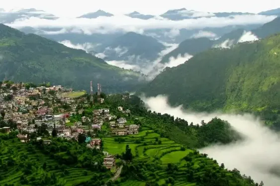

Munsiyari is a picturesque hill station located in the Pithoragarh district of Uttarakhand, nestled in the Johar Valley of the Kumaon region.
The name "Munsiyari" translates to "place with snow," and it offers stunning views of snow-capped peaks, including the famous Panchachuli range.
This offbeat destination is ideal for nature lovers, adventure enthusiasts, and trekkers. Popular treks from Munsiyari include the Milam Glacier trek, Namik Glacier trek, and the Khalia Top trek.
Binsar is a quiet and secluded hill station situated in the Almora district of Uttarakhand.
The main attraction of Binsar is the Binsar Wildlife Sanctuary, which is home to a variety of flora and fauna, including oak and rhododendron forests, leopards, Himalayan black bears, and more than 200 bird species.
Visitors can enjoy nature walks, birdwatching, and wildlife spotting within the sanctuary. The sanctuary also offers panoramic views of the Himalayan peaks such as Nanda Devi, Trishul, and Panchachuli.
Chopta

Chopta is a quaint hill station located in the Rudraprayag district of Uttarakhand, often referred to as the "Mini Switzerland of India."
Situated amidst dense forests of pine, deodar, and rhododendron, Chopta offers breathtaking views of snow-capped Himalayan peaks, including Trishul, Nanda Devi, and Chaukhamba.
Chopta serves as the base camp for the famous Tungnath Temple trek, which is the highest Shiva temple in the world. The trek further extends to Chandrashila, which offers panoramic views of the surrounding peaks.